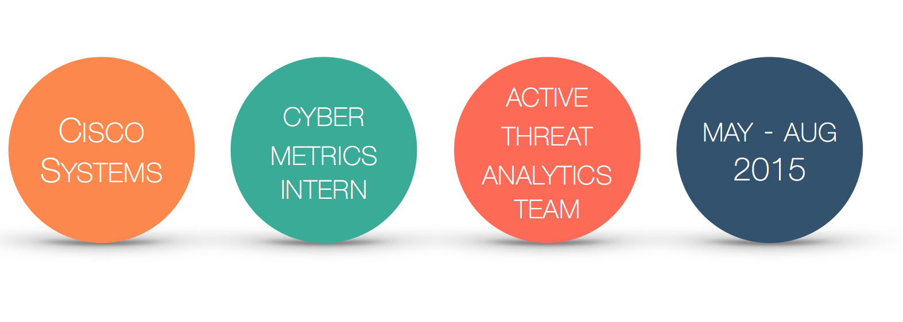

Projects and Accomplishments
1. Sourcefire Signature Fidelity Project
Identified and implemented a metrics-driven process to be run by Cisco quarterly or more to determine the fidelity of the Sourcefire signature. The process of measuring the accuracy of Sourcefire signatures is the foundation for strengthening Cisco's threat detection software. Cisco continues to use my project to improve its Intrusion Detection Software and Sourcefire signature rules.
Technical Skills Used: Linux, Shell Scripting (Bash), Sourcefire Software, Request Tracker Software
I presented the final project to the heads of the Security Operations Center.
2. VERIS Cyber Metrics Data Anlysis Project
Determined the VERIS (Vocabulary for Event Recording and Incident Sharing) metrics data for all security threats to the customer networks that occurred from June 2014 - June 2015. This involved measuring the asset, threat, and impact landscapes of nearly 1700 total incidents by performing incident tracking and statistical analysis of all threat actors, actions, varieties, vectors, exploits, CVEs, assets, attributes, etc.
Technical Skills Used: SQL, Request Tracker Software, Microsoft Excel, Tableau
Substantially furthered my knowledge and understanding of malware, hacking, and social attacks, as well as hot malware threats such as Angler exploit kits carrying CryptoWall ransomware.
Generated a professional cyber metrics report for the 2014-2015 year detailing all VERIS information, supplemented by charts, graphs, and statistics.
3. Adobe Flash Research and Data Analysis Project
Given the frequent Adobe Flash exploits that occurred at the beginning of the year, I researched all previous versions of Adobe Flash, dating back to 2010, to analyze the exploit trend over time. My main objective was to measure the length of time between the release of a new Adobe Flash update and the release of a new exploit kit targeting the patched Flash vulnerabilities.
I analyzed the data by collecting VERIS metrics for all Flash exploits, including recent zero-day attacks, and used the data to form meaningful conclusions.